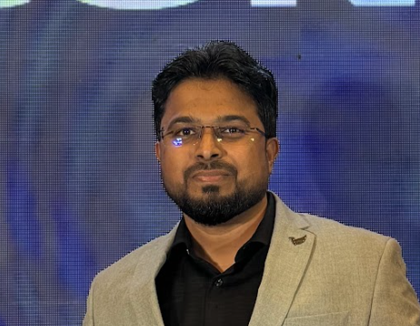

Moderator
Saheel Sikilkar
Syngenta
Guiding a practical conversation across technology, public systems, and citizen experience.
Shaping the next chapter of the open web
A forward-looking conversation on Drupal’s direction as a platform, a product, and an open-source ecosystem.
Drupal is evolving on several fronts. Core continues to provide an extensible foundation, Drupal CMS is changing how experiences are delivered, emerging site-building approaches are reshaping workflows, and AI is opening up new possibilities.
These changes are connected. But what do they mean for the people building, adopting and contributing to Drupal? And which decisions will matter most over the next few years?
We are bringing four perspectives together for a candid conversation about the choices, opportunities and trade-offs ahead. This is not a sequence of initiative updates or product pitches. The focus is on understanding what Drupal needs to become, what it must preserve, and how the community can help shape its future.
Expect different viewpoints, practical questions and a clearer picture of the opportunities ahead for Drupal.
The discussion will connect important parts of Drupal’s evolution, rather than treating each initiative in isolation.
How should the foundation evolve while retaining the stability and flexibility Drupal is known for?
What needs to change to make powerful digital experiences easier to design, build and maintain?
How might AI-enabled tooling and new interfaces change the way teams work with Drupal?
How can Drupal remain relevant, accessible and sustainable for organisations and contributors?
A team is choosing how to build
It wants fast delivery and a clear editing experience, without giving up integration, governance or the ability to extend the platform.
Why would the team choose Drupal over other approaches?
How much can site builders do confidently, and when do developers step in?
What keeps the solution adaptable, maintainable and sustainable in five years?
Those are not separate questions. Together, they define what Drupal needs to deliver next.
Where must Drupal simplify?
What complexity adds value, and what gets in the way?What belongs in Core?
Which investments strengthen the foundation for everyone?How do we measure adoption?
What would make Drupal the clear choice for more teams?Who is Drupal being built for?
How do builders, editors, product teams and enterprises shape priorities?Where does AI help?
Which workflows improve, and where should we remain cautious?What can the community do?
What should participants contribute to next?We are bringing together perspectives from across the Drupal ecosystem. We are curating the panelist lineup and will announce it once it is confirmed.

Syngenta
Guiding a practical conversation across technology, public systems, and citizen experience.
We’re bringing together people from across the Drupal ecosystem to explore where the platform is heading, the challenges ahead, and what this means for developers, organizations, and the wider community. Panelists will be announced soon.
Leave with a sharper understanding of Drupal’s strategic choices, the trade-offs that matter, and where your own work or contribution can have an impact. Whether you build Drupal, use it to deliver digital experiences, or contribute to its ecosystem, this discussion is about the choices that shape the future of the open web.